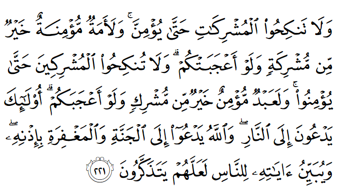

চৌধুরী সাহেব তার বিদেশের বাড়িতে আরাম চেয়ারে বসে, কফি হাতে নিয়ে একটা বইয়ে ডুবে আছেন। তখন তার ছেলে এসে বলল, “বাবা, আমি জেনিফারকে বিয়ে করবো বলে সিদ্ধান্ত নিয়েছি। ওকে আমার অনেক ভালো লাগে। ও অন্যদের মতো খারাপ না। পার্টি করে না। আমি ওকে ছাড়া আর কাউকে বিয়ে করবো না।”
“কী!”, চৌধুরী সাহেব রাগে লাল হয়ে চিৎকার দিয়ে উঠলেন , “তুমি বিয়ে করবে এক খ্রিস্টান মেয়েকে? এই জন্য তোমাকে আমি বিদেশে বড় করেছি? আমরা চৌধুরী বংশ! আমি বেঁচে থাকতে তোমাকে আমি খ্রিস্টান মেয়ে বিয়ে করতে দেবো না….”, বলতে বলতে চৌধুরী সাহেব বুক চেপে ধরে মাটিতে পড়ে গেলেন।
এই ধরনের ঘটনা আজকে বিদেশে বসবাসকারী মুসলিম পরিবারগুলোতে নিত্যদিনের ঘটনা। চৌধুরী সাহেব টাইপের বাবা-মা তাদের সন্তানদের বড় করেন পাশ্চাত্যের সংস্কৃতিতে। তাদের ছেলেমেয়েরা পশ্চিমা টিভি, মুভি, ম্যাগাজিন দেখে জীবন সম্পর্কে শেখে। পশ্চিমা স্কুল-কলেজ-ইউনিভারসিটিতে হাজারো অমুসলিম ছেলেমেয়ের সাথে ওঠাবসা করে বড় হয়। আর তাদের বাবা-মায়েরা সপ্তাহে একদিন তাদেরকে জুমুআহ’র নামাজে মসজিদে নিয়ে, পহেলা বৈশাখে বাঙালি পোশাক পরিয়ে, পান্তা ভাত খাইয়ে ধরে নেন: তাদের ছেলেমেয়েরা বড় হয়ে ‘বাঙালি মুসলিম আদর্শ’ ধরে রাখবে। তারপর দেশ থেকে আমদানি করে আনা কাউকে ধরিয়ে দিলেই তাকে বিয়ে করে সুখে সংসার পার করবে।
এই বাবা-মা’রা যদি তাদের সন্তানদেরকে কুর’আন শেখাতেন এবং নিজেরা শিখতেন, তাহলে তারা বিয়ে সম্পর্কে আজকাল প্রচলিত অনেক বিভ্রান্তির উত্তর পেয়ে যেতেন—

মুশরিক নারীদেরকে বিয়ে করবে না, যতক্ষণ না তারা ঈমান আনছে। একজন বিশ্বাসী দাসীও মুশরিক নারী থেকে ভালো, যদিও কিনা মুশরিক নারী তোমাদেরকে বিমোহিত করে। আর তোমাদের মেয়েদেরকে মুশরিক পুরুষদের সাথে বিয়ে দেবে না, কারণ একজন বিশ্বাসী দাসও মুশরিক পুরুষ থেকে ভালো, যদিও কিনা সে তোমাদেরকে মুগ্ধ করে। ওরা তোমাদেরকে আগুনের দিকে ডাকে। আর আল্লাহ তোমাদেরকে জান্নাত এবং তার নিজগুণে ক্ষমার দিকে ডাকেন। তিনি তাঁর নির্দেশগুলোকে মানুষের কাছে একদম পরিষ্কার করে দেন, যাতে করে তারা শিক্ষা নিতে পারে। [আল-বাক্বারাহ ২২১]
আজকাল প্রায়ই শোনা যায় এমন সব প্রশ্ন: “ভাই, আমি আমার হিন্দু বান্ধবীকে বিয়ে করতে চাই। তাকে আমি মুসলিম বানিয়ে ফেলবো। সে-ও বলেছে যে সে ইসলাম “ট্রাই” করে দেখতে চায়। এভাবে একজনকে মুসলিম বানানোর বিরাট সওয়াব আমি পাবো। তাছাড়া আজকালকার মুসলিম মেয়েদের কী অবস্থা দেখেন না? ইউনিভার্সিটি পার না হতেই কয় হাত বদল হয়। আমার এই বিয়েটা তো অবশ্যই হালাল হবে, তাই না ভাই?”
আল্লাহ تعالى আমাদেরকে সোজা বলে দিয়েছেন যে, “মুশরিক নারীদেরকে বিয়ে করবে না, যতক্ষণ তারা ঈমান না আনছে।” তিনি বলেননি, “ঈমান আনতে রাজি হলে মুশরিক নারীকে বিয়ে করো।” বিয়ে করার আগে ঈমান আনতে হবে। বিয়ে করে তারপর ঈমান আনলে হবে না। আরও লক্ষ্য করার ব্যাপার হলো যে, আল্লাহ تعالى বলেননি, ‘যতক্ষণ না মুসলিম না হচ্ছে।’ তিনি বলেছেন, “যতক্ষণ ঈমান না আনছে।” ঈমান আনা হচ্ছে: আল্লাহর تعالى প্রতি বিশ্বাস, ফিরিশতাগণের প্রতি বিশ্বাস, কিতাব সমূহের প্রতি বিশ্বাস, রাসুলগণের প্রতি বিশ্বাস, শেষ দিনের প্রতি বিশ্বাস এবং কদরের ভালো-মন্দের প্রতি বিশ্বাস। কেউ মুখে বলল, “ওগো আমি মুসলিম হয়ে যাবো, চলো বিয়ে করি।” তাহলেই তার হাত ধরে কাজ্বি অফিসে গিয়ে হাজির হলে হবে না। ঈমান একটা দীর্ঘ ব্যক্তিগত সফর। এটা কোনো ছেলের হাত ধরে রাতারাতি অর্জন হয় না।
এই আয়াতে আল্লাহ تعالى কঠিনভাবে বলেছেন যে, আমাদের ছেলেদের সাথে একজন মুসলিম দাসী বা কাজের লোককেও বিয়ে করানো ভালো, কিন্তু কোনো মুশরিক মেয়ের সাথে বিয়ে করানো যাবে না। অনেক ‘আধুনিক মুসলিম’ এই আয়াত দেখে অভিযোগ করেন, “ছি! একজন নারী মুশরিক হলেই কি সে এত খারাপ হয়ে যাবে যে, তাকে একজন দাসীর থেকেও খারাপ বলতে হবে?” ওদিকে অমুসলিমরা এই ধরনের আয়াত দেখিয়ে বলে, “কী! আমরা দাসের থেকেও খারাপ? কত বড় অপমান!”
প্রথমত, আল্লাহর تعالى দৃষ্টিতে একজন স্বাধীন নারী এবং দাসী নারীর মধ্যে শুধু অধিকার এবং আইন প্রয়োগের ক্ষেত্রে কিছু পার্থক্য রয়েছে, এছাড়া আর কোনো পার্থক্য নেই। তাঁর تعالى কাছে মানুষকে মাপার একমাত্র মানদণ্ড হচ্ছে: কার তাকওয়া কত বেশি। সেই মানদণ্ডে একজন রাজার থেকেও একজন দাসের সম্মান আল্লাহর تعالى কাছে অনেক উপরে হতে পারে। তাই দাসের সাথে তুলনা করা মানে দাসদেরকে ছোট করা নয়। বরং মুসলিমদের বলে দেওয়া হচ্ছে যে, তারা যখন বিয়ে করবে, তখন মুসলিম দাসী পাত্রী থাকলে, তাকেও যেন মুশরিক মেয়েদের থেকে উপরে স্থান দেয়, সেই মুশরিক মেয়ে যত বড় সম্ভ্রান্ত পরিবারের সম্মানিত নারী হোক না কেন। কারণ আল্লাহর تعالى কাছে তাকওয়া হচ্ছে মানুষকে যাচাই করার মানদণ্ড। এই মানদণ্ডে যে কোনো তাকওয়াবান মানুষ, অন্য যে কোনো মানুষের থেকে উপরে, সে যেই ধর্মেরই হোক না কেন।
এর পেছনে কারণ কী থাকতে পারে? হিন্দু মেয়েরা কি মুসলিম মেয়েদের থেকে ভালো হতে পারে না? ধরুন এক মুসলিম ভাই একজন হিন্দু মেয়েকে বিয়ে করে নিয়ে আসলো। প্রথম কয়েক মাস হয়তো ভালোই যাবে। তারপর যখন কয়েকদিন পর দুর্গাপূজা, কালীপূজা, সরস্বতী পূজা, শিবরাত্রি, ভাই ফোঁটা, রাখী বন্ধন, দোলযাত্রা, রথযাত্রা, সত্যনারায়ণ পূজা, গণেশ চতুর্থী, চড়ক পূজা, গম্ভীরা পূজা ইত্যাদি নানা অনুষ্ঠানে স্ত্রী যেতে চাইবে, তখন তাকেও সাথে যেতে হবে। কারণ না গেলে স্ত্রী পক্ষের আত্মীয়রা খুব দুঃখ পাবে। তখন সেই মুসলিম ভাই কী করবে? কয়দিন ‘না’ বলবে?
তারপর একদিন বাচ্চা হবে। তখন কি বাচ্চার আক্বিকা হবে, নাকি বাচ্চাকে মন্দিরে নিয়ে অনুষ্ঠান করে নাম রাখা হবে? বাচ্চাগুলো যখন সারাদিন মায়ের সাথে থেকে হিন্দু ধর্ম, হিন্দু সংস্কৃতি শিখবে এবং তাকে ‘বিসমিল্লাহ’ বলতে বললে, সে চিৎকার দেবে, ‘হরে কৃষ্ণ, হরে হরে হরে!’ — তখন সে কী করবে? ছেলেমেয়েগুলো বড় হবে জগাখিচুড়ি ইসলাম শিখে। তাদের ইসলামের প্রতি ভেতর থেকে কোনো টান থাকবে না, কারণ তারা তাদের সবচেয়ে আপনজন, তাদের মা’কেই দেখেনি ইসলাম মানতে, বরং দেখেছে ইসলামের জন্য মা’র কত কষ্ট, কত অপমান।
তারপর বছরের পর বছর স্ত্রীর সাথে ধর্ম, সংস্কৃতি নিয়ে মনমালিন্য, মতবিরোধ চলতে চলতে একদিন আর থাকতে না পেরে স্ত্রী তালাক চাইবে। সন্তানদের নিয়ে আলাদা হয়ে থাকতে চাইবে। তখন সেই ভাই বুঝবেন তিনি কত বড় ভুল করেছিলেন। তখন তিনি শুধুই কপাল চাপড়াবেন আর আয়াতের এই অংশের কথা বার বার মনে পড়বে—
ওরা তোমাদেরকে আগুনের দিকে ডাকে।
জীবনটা যতই সংগ্রামের হোক না কেন, একজন তাকওয়াবান সঙ্গী/সঙ্গিনী সাথে থাকলে যে কত সহজে আল্লাহর تعالى উপর আস্থা রেখে জীবনটা পার করা যায়, নিজের ঈমানকে ধরে রাখা যায়, হাজারো কষ্টের মধ্যেও মনে শান্তি ধরে রাখা যায়—সেটা যাদের নেই, তাদেরকে বলে বোঝানো যাবে না। আসুন আমরা চিন্তা ভাবনা করে একজন তাকওয়াবান জীবন সঙ্গী বেছে নেই, তার সাথে আরেকটু সময় ব্যয় করি, তাকে আল্লাহর تعالى আরও কাছে নিয়ে যাবার জন্য। কারণ সে শুধু একাই যাবে না, সে আপনাকেও সাথে নিয়ে আল্লাহর تعالى কাছে যাবে এবং একদিন সে-ই আপনাকে ঈমান হারিয়ে ফেলার মতো কঠিন সব ঘটনায় শক্ত হাতে আঁকড়ে ধরে রাখবে, যাতে করে আপনি পথ হারিয়ে না ফেলেন। শেষ পর্যন্ত একদিন যখন আপনি অনেক সংগ্রাম করে জান্নাতে পৌঁছাবেন এবং জান্নাতের অসাধারণ সৌন্দর্য উপভোগ করতে করতে হঠাৎ করে এক অপার্থিব অতুলনীয় সৌন্দর্যের মুখোমুখি হয়ে বিস্ময়ে হতবাক হয়ে থমকে দাঁড়াবেন, তাকিয়ে দেখবেন আপনার সামনে দাঁড়িয়ে আছে আপনার সেই জীবন সঙ্গী/সঙ্গিনী । তখন আপনি বুঝতে পারবেন কেন আল্লাহ تعالى বলেছেন—
আর আল্লাহ তোমাদেরকে জান্নাত এবং তার নিজগুণে ক্ষমার দিকে ডাকেন।
আরেকটি ব্যাপার লক্ষ্য করতে হবে, আয়াতে আল্লাহ تعالى বলেননি মূর্তিপূজারি মেয়ে বিয়ে না করতে, বরং তিনি বলেছেন মুশরিক অর্থাৎ যে বড় ধরনের শিরকে ডুবে আছে, তাকে বিয়ে না করতে। একজন মুসলিম নামধারী মেয়েও মুশরিক হয়ে যায় যখন সে কোনো এক পীরকে আল্লাহর تعالى কাছাকাছি মনে করে, তার সামনে মাথা নত করে প্রার্থনা করে, অথবা কোনো কবরে গিয়ে মৃতের কাছে মাথা নত করে প্রার্থনা করে বা প্রকাশ্যে কুফরী করে। তাকে হাজার বুঝিয়েও কোনো কোনো লাভ হয় না।[৩৫৯] এই ধরনের মুশরিক মেয়েদেরকেও বিয়ে করা যাবে না।[১৮]
এখন অনেকেই ভাবতে পারেন, “তাহলে তো আমি নাইট ক্লাবে গিয়ে ইহুদি, খ্রিস্টান মেয়ে বাগিয়ে ফেলতে পারি! ইহুদি-খ্রিস্টান মেয়েদের তো বিয়ে করতে কোনো সমস্যা নেই। ওরা তো আর মুশরিক না। তাছাড়া কু’রআনেই না বলা আছে— ‘তোমাদের পূর্বে যাদেরকে কিতাব দেয়া হয়েছে, তাদের সচ্চরিত্রা নারীদের সাথে তোমাদের বিবাহ বৈধ [আল-মায়েদাহ ৫:৫]’।”
তাদের জন্য দুঃসংবাদ কারণ আল-মায়েদাহ’র আয়াতে আসলে বলা আছে—
“সচ্চরিত্রা মু’মিন নারী এবং তোমাদের আগে যাদেরকে কিতাব দেয়া হয়েছে তাদের সচ্চরিত্রা নারী তোমাদের জন্য হালাল করা হল যখন তোমরা তাদেরকে মোহরানা প্রদান কর,স্ত্রী হিসেবে গ্রহণ করো, প্রকাশ্য ব্যভিচারকারী বা গোপনপত্নী গ্রহণকারী হিসেবে নয়।” [আল-মায়েদাহ ৫:৫]
এই আয়াতে আল্লাহ تعالى সোজা বলে দিয়েছেন, ইহুদি-খ্রিস্টান মেয়েদেরকে গার্ল-ফ্রেন্ড হিসেবে নেওয়া যাবে না। সুতরাং যারা বিদেশি গার্লফ্রেন্ড নেওয়ার পরিকল্পনা করছেন, যেন একদিন মুসলিম বানিয়ে বিয়ে করে ফেলতে পারেন, তারা ভুলে যান। আর যদি কেউ মনে করেন যে, তিনি কোনো বিধর্মী মেয়েকে গার্লফ্রেন্ড বানাবেন না, কোনো ধরনের শারীরিক সম্পর্ক করবেন না, শুধুই ইসলামের দাওয়াহ দেবেন, আর একবারে বিয়ে করবেন, তাহলে তাদেরকে এই কঠিন শর্তটা মাথায় রাখতে হবে— “তোমাদের পূর্বে যাদেরকে কিতাব দেয়া হয়েছে তাদের সচ্চরিত্রা নারী”। সচ্চরিত্রা নারী কারা? যারা ব্যাভিচার করেনি, যাদের বয়ফ্রেন্ড নেই। আজকে এমন কোনো পশ্চিমা মেয়েকে কেউ খুঁজে পেলে তাকে অভিনন্দন!
তবে এটা ঠিক যে, আজকেও ইহুদি, খ্রিস্টানদের মধ্যে অত্যন্ত ধর্মপরায়ণ মহিলা আছেন, যারা কোনোদিন অন্য কোনো পুরুষকে স্পর্শ করতে দেননি। মুসলিমদের মতোই ইহুদি এবং খ্রিস্টানদের মধ্যে অনেকে আছেন যারা অত্যন্ত ধর্মপরায়ণ এবং তারা মুসলিমদের মতোই ব্যাভিচারকে ঘৃণা করেন। রক্ষণশীল ইহুদি এবং খ্রিস্টান ধর্মের মেয়েরা মাথা থেকে পা’য়ের গোড়ালি পর্যন্ত ঢাকেন, আকর্ষণীয় কাপড় পরেন না, ঠিক যেভাবে মুসলিম নারীরা হিজাব করেন।[৩৬০] হাজার বছর আগে সাহাবিদের সময় এমন নারী ছিলেন, এখনো আছেন। তাদেরকে একজন মুসলিম বিয়ে করতে পারে।
এক্ষেত্রে সাবধান থাকতে হবে যেন তারা মুশরিক না হয়।[৬] অনেক ইহুদি গোত্র শিরকে ডুবে গেছে, কারণ তারা তাদের রাবাইদের (ধর্মীয় পুরোহিতদের) সেভাবে ভক্তি করে, যেভাবে আজকে শিরকে ডুবে যাওয়া মুসলিমরা মাজারে মৃতদের এবং পিরদের অন্ধ ভক্তি করে। আর খ্রিস্টানদের মধ্যে বেশিরভাগ গোত্রই আজকে সর্বোচ্চ শিরকে ডুবে আছে— তারা যীশুকে ঈশ্বর মনে করে। এরাই আজকে সংখ্যাগরিষ্ঠ। এদেরকে বিয়ে করার অনুমতি সূরা আল মায়েদাহ’য় দেওয়া হয়নি।[১৮][৩৬২] তবে এদের মধ্যেও সংখ্যালঘু কিছু ইহুদি এবং খ্রিস্টান গোত্র রয়েছে যারা আজো তাওরাহ এবং ইঞ্জিলের এক ঈশ্বরের ধারণা ধরে রেখেছে। এরাই প্রকৃত আহলে কিতাব বা আগের কিতাবের অনুসারী।
আজকাল কিছু মুসলিমরা এই ব্যাপারটা কোনোভাবেই মেনে নিতে পারেন না যে, আল্লাহ تعالى মুসলিম ছেলেদেরকে কোনো ইহুদি বা খ্রিস্টান মেয়ে বিয়ে করার অনুমতি কীভাবে দিতে পারেন। তারা এই ব্যাপারটাতে এতটাই অখুশি যে, এটা তাদের ঈমান হারিয়ে ফেলার মতো একটা কারণ হয়ে গেছে। প্রথমত, তাদের বুঝতে হবে যে, আল্লাহ تعالى পাশ্চাত্যের যে কোনো ইহুদি-খ্রিস্টান মেয়েদের বিয়ে করার অনুমতি দেননি। মুসলিমরা পাশ্চাত্যের দেশগুলোতে ঢালাওভাবে অমুসলিম মেয়েদের বিয়ে করছে মানেই এই না যে, তাদের বিয়েগুলো ইসলাম অনুসারে হালাল এবং তারা ইসলামের আইন অনুসারে বৈধ স্বামী-স্ত্রী হতে পেরেছে। আল্লাহ تعالى শুধুমাত্র তাওরাহ বা ইঞ্জিলের অনুসারী ধর্মপরায়ণ, সচ্চরিত্রা নারীদের বিয়ে করার অনুমতি দিয়েছেন।
দ্বিতীয়ত আমাদের বুঝতে হবে যে, ইসলামের প্রথম দিকে যখন গুটি কয়েক মুসলিম ছিলেন, তাদের পক্ষে সবসময় সচ্চরিত্রা মুসলিম নারী খুঁজে পাওয়া সম্ভব ছিল না। আল্লাহ تعالى যদি অনুগ্রহ করে সচ্চরিত্রা আহলে কিতাবের নারীদের বিয়ে করার অনুমতি না দিতেন, তাহলে বহু মুসলিম পুরুষ সারা জীবনে বিয়ে না করেই মারা যেত। এভাবে শুধুই মুসলিম হওয়ার কারণে বহু বংশ বিলুপ্ত হতে যেত। এছাড়া ইসলামের প্রচারে আহলে কিতাবের নারীদের বিয়ে করা অনেক প্রভাব ফেলেছে। এর মাধ্যমে আহলে কিতাবের নারীরা তাদের মুসলিম স্বামীর কাছ থেকে ইসলাম শিখেছে, তারপর নিজেরা একসময় মুসলিম হয়েছে। তাদের মাধ্যমে তাদের পরিবাররা ইসলামের সংস্পর্শে এসেছে। এভাবে ইসলামের আলো অমুসলিম পরিবারে ছড়িয়ে গেছে।
সবশেষে আল্লাহ تعالى আমাদেরকে আবারো মনে করিয়ে দেন—
তিনি তার নির্দেশগুলোকে মানুষের কাছে একদম পরিষ্কার করে দেন, যাতে করে তারা শিক্ষা নিতে পারে।
এটা হচ্ছে হরমোনের তাড়নায় মাথা ভোঁতা হয়ে যাওয়া মুসলিম ছেলে-মেয়েদেরকে একধরনের ধমক দেওয়া। অনেকেই আছে যারা এই আয়াতের বাণী দেখেও দেখবে না, শুনে না শোনার ভান করবে। কারণ সে কোনোভাবেই তার বয়ফ্রেন্ড বা গার্লফ্রেন্ডকে ছেড়ে দেবে না। এতবছরের এত চেষ্টা, এত রেস্টুরেন্টে খাওয়া, এত ইসলামের দাওয়াহ দেওয়া, মুসলিম বানিয়ে বিয়ে করে হানিমুনে যাওয়ার এত পরিকল্পনা সব রাতারাতি বাতিল করে দেওয়া এত সহজ নয়। এই আয়াত পড়ে তখন সে খুঁজতে বসে যাবে ইন্টারনেটে কোনো ফাতওয়া পাওয়া যায় কিনা, যেটা তার ইচ্ছাকে সমর্থন করবে, তার বয়ফ্রেন্ড/গার্লফ্রেন্ডকে ধরে রাখার অনুমতি দেবে। যতক্ষণ এরকম কোনো ফাতওয়া পাওয়া না যায়, সে খুঁজতেই থাকবে। এদেরকেই আল্লাহ تعالى সাবধান করেছেন যে, তাঁর বাণী একদম পরিষ্কার। যাদের সদিচ্ছা আছে তারা তাঁর আয়াত থেকে শিক্ষা নেবে। তাঁর تعالى পরিস্কার বাণীর বিরুদ্ধে যাওয়ার সাহস যেন আমরা না দেখাই। আমরা কেউ যেন কখনো দাবি না করি যে, বিয়ের ব্যাপারে কুরআনের আয়াতগুলো ঠিক পরিস্কার ছিল না, তাই আমি নিজে থেকেই ভেবে চিন্তে সিদ্ধান্ত নিয়েছি। বিয়ের ব্যাপারে কুরআনের আয়াত একেবারেই পরিষ্কার, কোনো বিভ্রান্তির সুযোগ নেই।
সূত্র:
- [১] বাইয়িনাহ এর কু’রআনের তাফসীর।
- [২] ম্যাসেজ অফ দা কু’রআন — মুহাম্মাদ আসাদ।
- [৩] তাফহিমুল কু’রআন — মাওলানা মাওদুদি।
- [৪] মা’রিফুল কু’রআন — মুফতি শাফি উসমানী।
- [৫] মুহাম্মাদ মোহার আলি — A Word for Word Meaning of The Quran
- [৬] সৈয়দ কুতব — In the Shade of the Quran
- [৭] তাদাব্বুরে কু’রআন – আমিন আহসান ইসলাহি।
- [৮] তাফসিরে তাওযীহুল কু’রআন — মুফতি তাক্বি উসমানী।
- [৯] বায়ান আল কু’রআন — ড: ইসরার আহমেদ।
- [১০] তাফসীর উল কু’রআন — মাওলানা আব্দুল মাজিদ দারিয়াবাদি
- [১১] কু’রআন তাফসীর — আব্দুর রাহিম আস-সারানবি
- [১২] আত-তাবারি-এর তাফসীরের অনুবাদ।
- [১৩] তাফসির ইবন আব্বাস।
- [১৪] তাফসির আল কুরতুবি।
- [১৫] তাফসির আল জালালাইন।
- [১৬] লুঘাতুল কুরআন — গুলাম আহমেদ পারভেজ।
- [১৭] তাফসীর আহসানুল বায়ান — ইসলামিক সেন্টার, আল-মাজমাআহ, সউদি আরব
- [১৮] কু’রআনুল কারীম – বাংলা অনুবাদ ও সংক্ষিপ্ত তাফসীর — বাদশাহ ফাহাদ কু’রআন মুদ্রণ কমপ্লেক্স
- [৩৫৯] Islamqa.info,. (2016). The difference between the mushrikeen and the kuffaar, and to which category do the Jews and Christians belong? – islamqa.info. Retrieved 23 February 2016, from https://islamqa.info/en/67626
- [৩৬০] Wikipedia,. (2016). Tzniut. Retrieved 23 February 2016, from https://en.wikipedia.org/wiki/Tzniut
- [৩৬১] Islamqa.info,. (2016). Who are the women of the People of the Book whom Muslims are permitted to marry? – islamqa.info. Retrieved 23 February 2016, from https://islamqa.info/en/2527
- [৩৬২] Islamqa.info,. (2016). Are the Jews and Christians who exist nowadays mushrikeen (polytheists) and is it permissible to marry their women? – islamqa.info. Retrieved 23 February 2016, from https://islamqa.info/en/44695